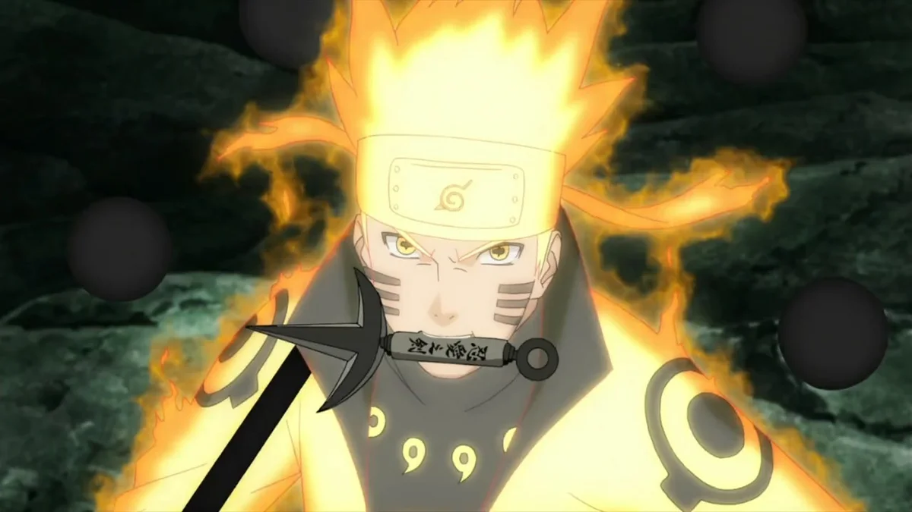
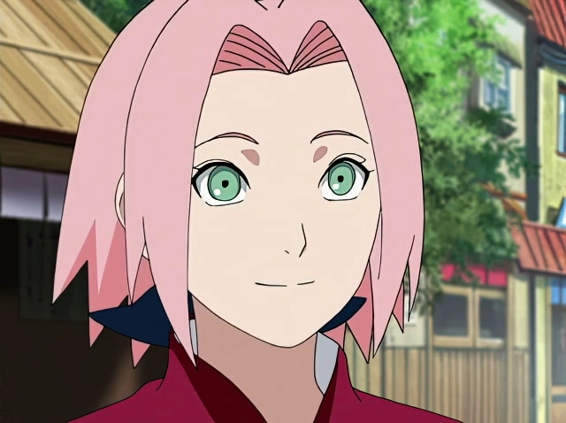
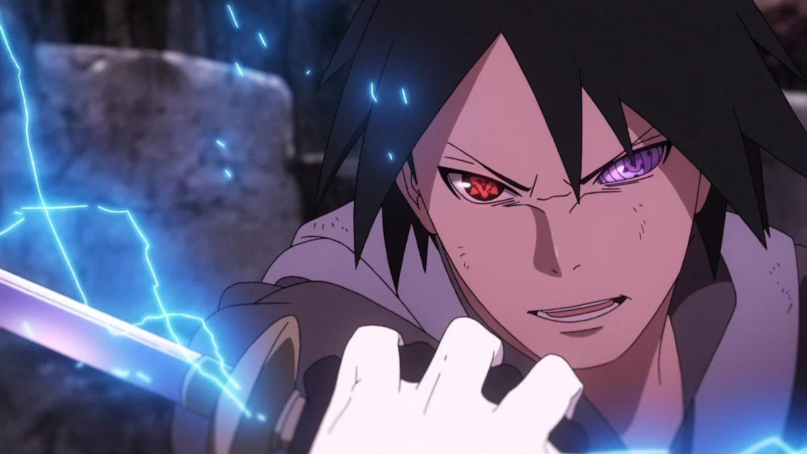
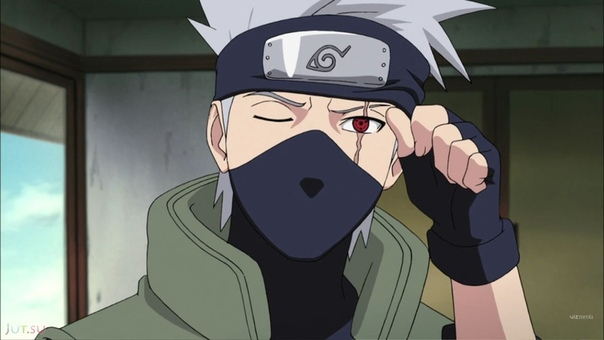

Команда 7
Наруто

Наруто Узумаки (яп. うずまきナルト, Узумаки Наруто) — шиноби Деревни Скрытого Листа. Главный персонаж вселенной. В день своего рождения стал джинчуурики Девятихвостого Демона-Лиса — судьба, из-за которой он стал изгоем для большей части людей в Конохе на протяжении всего своего детства. После присоединения к команде Какаши, Наруто упорно трудился, чтобы получить признание всех в деревне и исполнить свою заветную мечту стать Хокаге. В последующие годы, благодаря многим трудностям и испытаниям, он стал способным ниндзя, которого считали героем Конохагакуре, и после во всем мире, он стал известен как Герой Скрытого Листа (яп. 木ノ葉隠れの英雄, Конохагакуре но Эйю). Вскоре, он оказался одним из ключевых факторов победы в Четвертой Мировой Войне Шиноби, что в конце-концов привело его к достижению своей мечты, когда он стал Седьмым Хокаге (яп. 七代目火影, Нанадаймэ Хокаге; досл. Тень Огня Седьмого Поколения).
Сакура

Сакура Учиха (яп. うちはサクラ, Учиха Сакура, урождённая Харуно (яп. 春野) — куноичи из Скрытого Листа. Став частью Команды 7, Сакура быстро осознаёт свою неподготовленность к суровой жизни шиноби. Тем не менее, после прохождения тренировок под руководством Саннина Цунаде, она преодолевает это и становится квалифицированным ниндзя-медиком. В конце манги становится женой Саске, а позже рожает от него дочь Сараду.
Саске

Саске Учиха (яп. うちはサスケ, Учиха Сасукэ) — один из последних выживших членов клана Учиха из Деревни Скрытого Листа. После того, как его старший брат Итачи вырезал весь их клан, Саске поставил перед собой жизненную цель отомстить за клан и семью, убив Итачи. Он попадает в Команду 7, когда становится ниндзя, и благодаря состязаниям со своим соперником и лучшим другом, Наруто Узумаки, начинает оттачивать свои навыки. Недовольный своим прогрессом, он покидает Лист, чтобы обрести силу, необходимую для осуществления мести. Годы, проведённые в поисках мести, стали невероятно взыскательными и неразумными, равно как и изолировали его от других, из-за чего он вскоре становится международным преступником. После того, как Саске сыграл одну из ключевых ролей в окончании Четвёртой Мировой Войны Шиноби, а Наруто смог избавить его от ненависти, он решает вернуться в Скрытый Лист и посвящает свою жизнь защите деревни и её жителей — таким образом, он становится известен под прозвищем "Поддерживающий Каге" (яп. 支う影, Сасаукагэ, Буквальное значение: Поддерживающая Тень).
Какаши

Какаши Хатаке (яп. はたけ カカシ Хатакэ Какащи) — шиноби Скрытого Листа из клана Хатаке. Более известный как Какаши Шарингана (яп. 写輪眼のカカシ, Щаринган но Какащи), благодаря подарку Обито Учиха. Является одним из самых талантливых ниндзя Конохи. В прошлом капитан Анбу, Какаши возглавляет Команду 7. После окончания Четвёртой Мировой Войны Шиноби Какаши становится Шестым Хокаге Конохи (яп. 六代目火影, Рокудаймэ Хокаге; досл. Шестая Тень Огня).